Introducing ggmosaic2: an enhanced ggmosaic
Gavin Klorfine
2026-08-12
Source:vignettes/introducing-ggmosaic2.Rmd
introducing-ggmosaic2.RmdWith ggmosaic being taken off of CRAN and appearing unmaintained (PRs and issues not receiving responses as well as minimal commit activity on the repository), there was a need to bring mosaic plots back to the ggplot2 framework. In addition to fixing outstanding issues, we (the new authors) also wanted to improve upon the existing package, as several aspects of ggmosaics were inferior and/or limited when compared to mosaics produced by vcd and vcdExtra.
This vignette describes the many additions and changes made to ggmosaic that make up the initial release of ggmosaic2. The most important of these changes, is the introduction of residual shading, to show the pattern of association in a frequency table in relation to some loglinear model. This is described in its own vignette ggmosaic and Loglinear Models.
Basic Appearance
A few things were done to alter the basic appearance of mosaics, both
with and without the use of theme_mosaic():
Utilizing the top and right axes
When three or more variables are used, the top (three or more
variables) and right (four or more variables) axes will now be utilized.
The below code is run using haleyjeppson/ggmosaic
(Old) and friendly/ggmosaic2
(New):
HairEyeColor |>
as.data.frame() |>
ggplot() +
geom_mosaic(aes(x = product(Sex, Eye, Hair), fill = Hair, weight = Freq))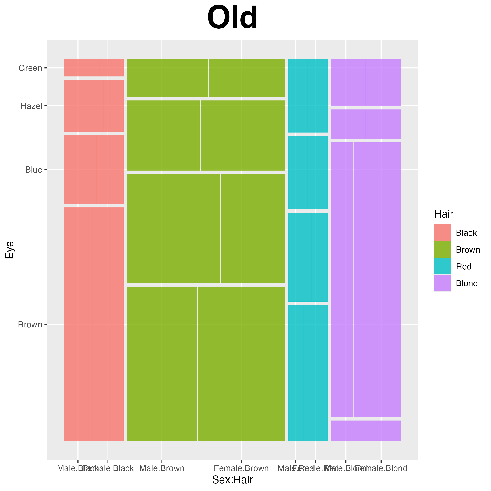
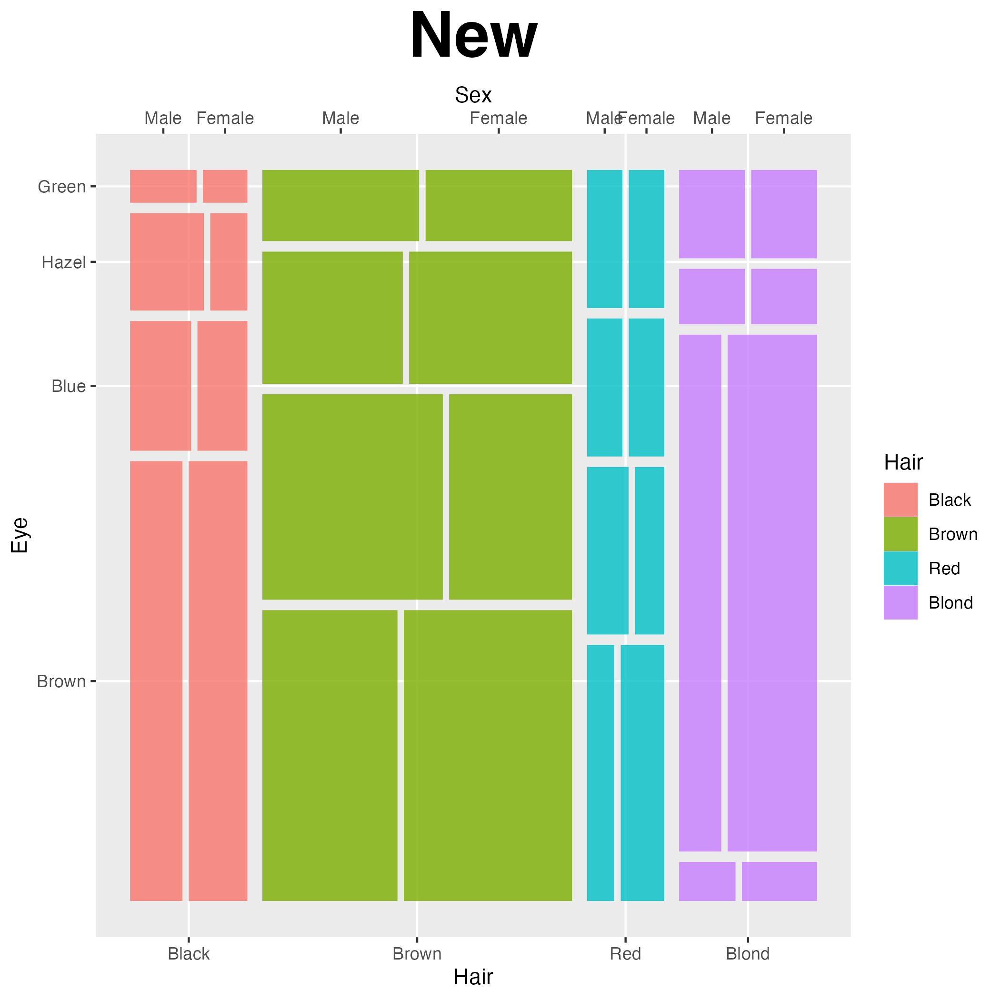
theme_mosaic()
With theme_mosaic() applied to the above:
HairEyeColor |>
as.data.frame() |>
ggplot() +
geom_mosaic(aes(x = product(Sex, Eye, Hair), fill = Hair, weight = Freq)) +
theme_mosaic()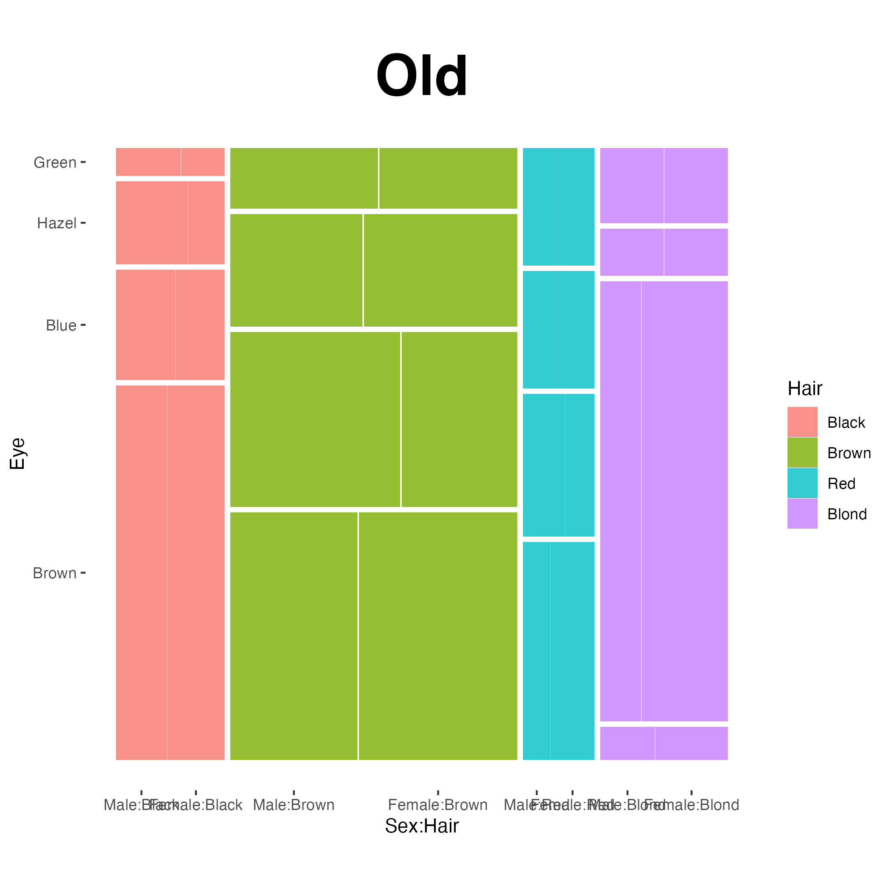
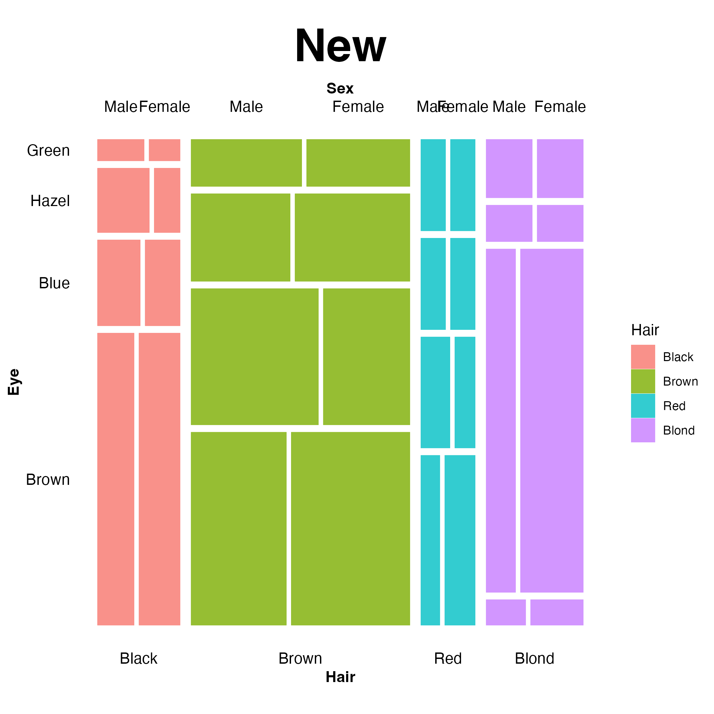
Axis labels had a bold face applied to be consistent with mosaics made using vcd and vcdExtra. Axis ticks were removed, as they are unneccessary for mosaic displays.
New to theme_mosaic() is a convenience argument
rot_labels that can rotate category labels to a
user-specified angle (in degrees):
HairEyeColor |>
as.data.frame() |>
ggplot() +
geom_mosaic(aes(x = product(Sex, Eye, Hair), fill = Hair, weight = Freq)) +
theme_mosaic(rot_labels = 30)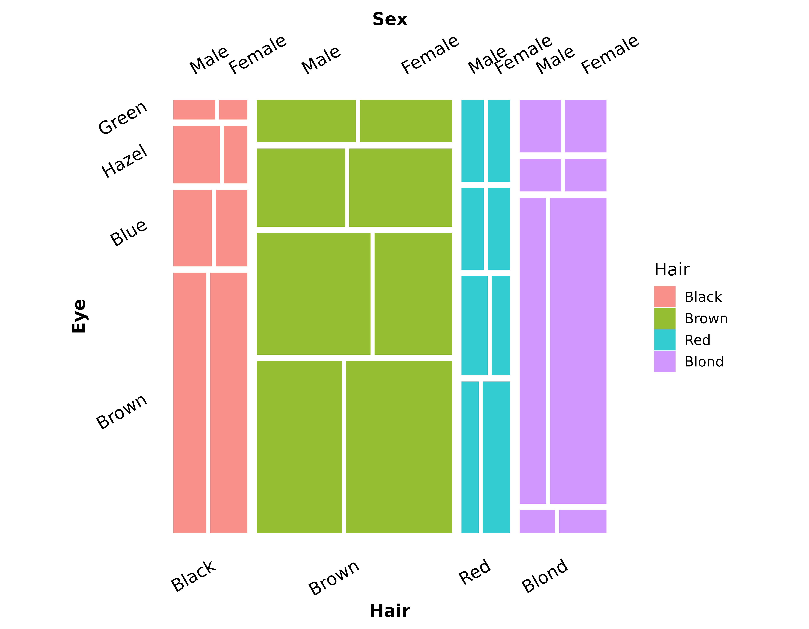
Spacing of cells
You might already have noticed that the innermost spacing of cells in
mosaic displays has been increased in ggmosaic2. Re-using
an example from “Utilizing the top and right axes,” differentiating
between cells is now easier:
HairEyeColor |>
as.data.frame() |>
ggplot() +
geom_mosaic(aes(x = product(Sex, Eye, Hair), fill = Hair, weight = Freq)) +
theme_mosaic()In the old ggmosaic, increasing the
offset argument of geom_mosaic() would not
remedy this issue to a satisfying degree. ggmosaic2
solves this by implementing a spacing scheme similar to
vcd:
where
is the number of splits and
is the innermost split. offset remains at a default of
.01.
Faceting is Fixed
The old ggmosaic had an issue where facet labels would not be independently generated per panel:
HairEyeColor |>
as.data.frame() |>
ggplot() +
geom_mosaic(aes(x = product(Eye, Hair), fill = Hair, weight = Freq)) +
theme_mosaic() +
facet_grid(. ~ Sex)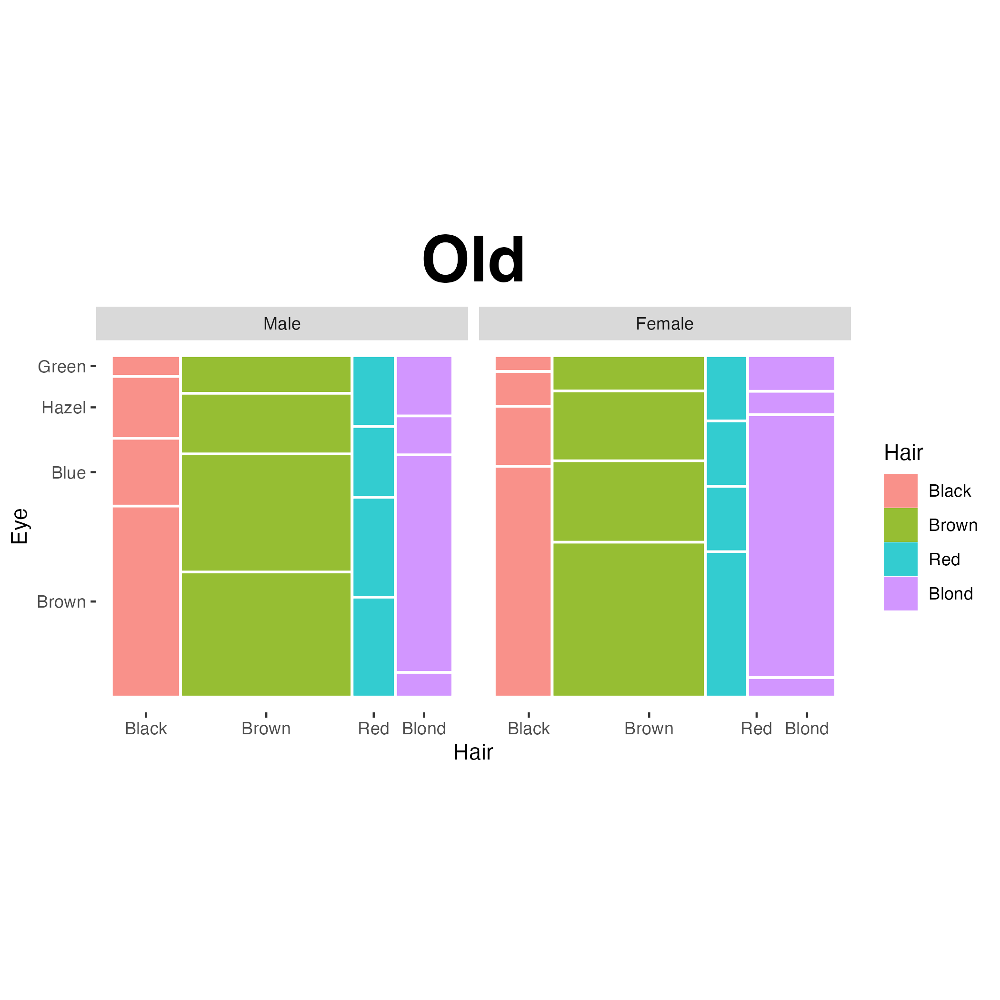
The new function facet_mosaic_grid() corrects this
behaviour, generating labels per facet:
HairEyeColor |>
as.data.frame() |>
ggplot() +
geom_mosaic(aes(x = product(Eye, Hair), fill = Hair, weight = Freq)) +
theme_mosaic() +
facet_mosaic_grid(. ~ Sex)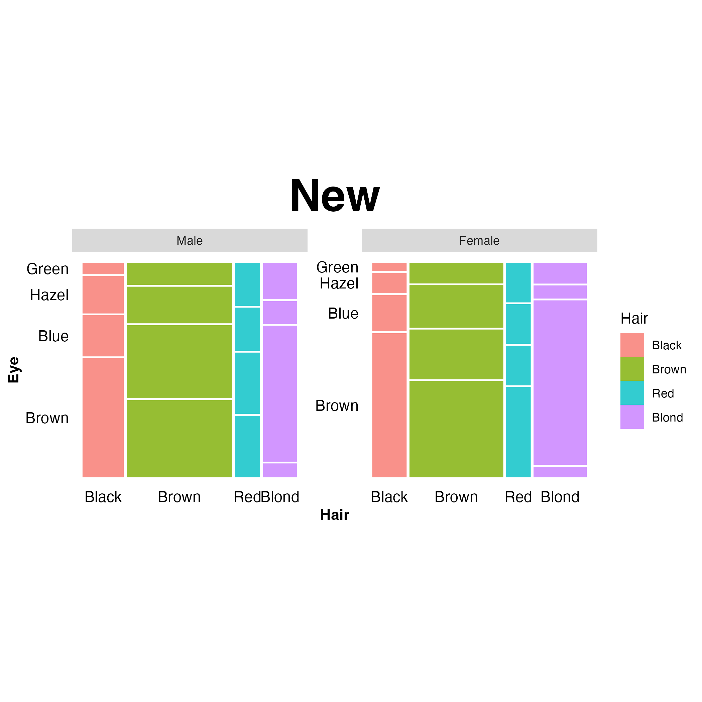
Residual-Based Shading
As stated, this portion of the vignette will be covered in minimal detail, with more information found in ggmosaic and Loglinear Models.
To apply residual-based shading to the HairEyeColor
example, we will need to supply the expected argument of
geom_mosaic() with a model. Let’s use the model of
independence. We will also need to use
scale_fill_residual() instead of the fill
argument of geom_mosaic():
HairEyeColor |>
as.data.frame() |>
ggplot() +
geom_mosaic(aes(x = product(Sex, Eye, Hair), weight = Freq),
expected = "independence") +
scale_fill_residual() +
theme_mosaic(rot_labels = 30)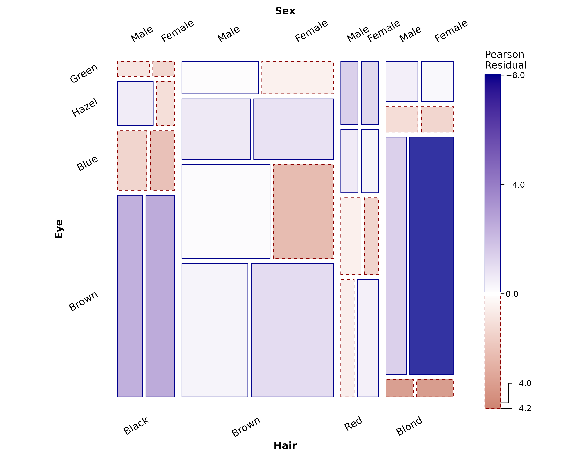
For a shading scheme that accentuates residuals
(similar to the default in vcd), you can use the
limits argument of scale_fill_residual():
HairEyeColor |>
as.data.frame() |>
ggplot() +
geom_mosaic(aes(x = product(Sex, Eye, Hair), weight = Freq),
expected = "independence") +
scale_fill_residual(limits = c(-4,4)) +
theme_mosaic(rot_labels = 30)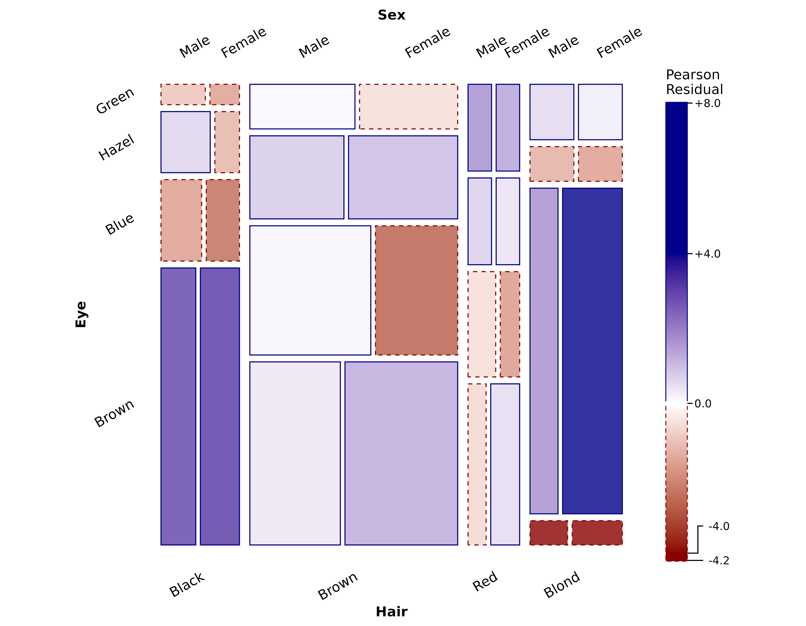
The legend can be re-positioned or disabled through the usual means:
HairEyeColor |>
as.data.frame() |>
ggplot() +
geom_mosaic(aes(x = product(Sex, Eye, Hair), weight = Freq),
expected = "independence") + # `show.legend = FALSE` works as well
scale_fill_residual(limits = c(-4,4)) +
theme_mosaic(rot_labels = 30, legend.position = "none")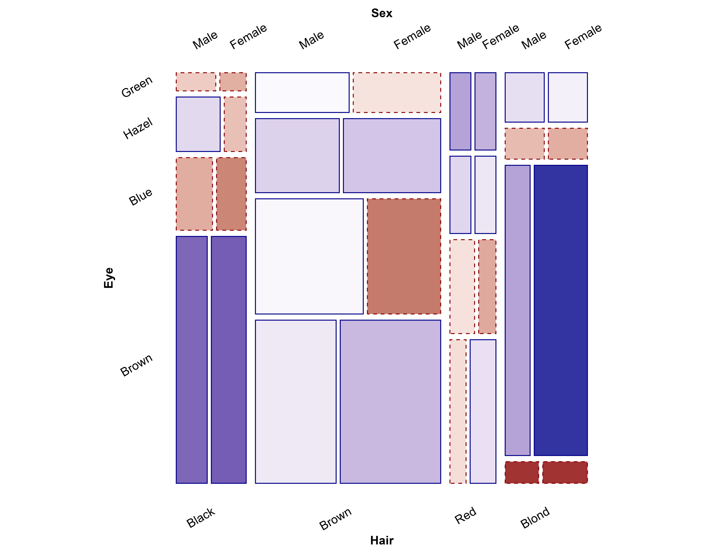
HairEyeColor |>
as.data.frame() |>
ggplot() +
geom_mosaic(aes(x = product(Sex, Eye, Hair), weight = Freq),
expected = "independence") +
scale_fill_residual(limits = c(-4,4)) +
theme_mosaic(rot_labels = 30, legend.position = "bottom")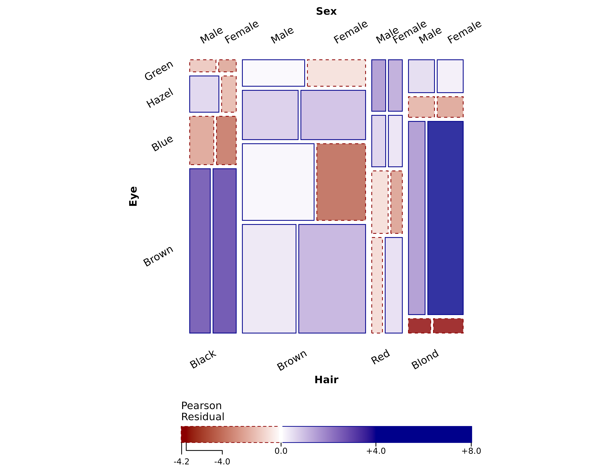
Custom outlines can also be disabled through the usual means:
HairEyeColor |>
as.data.frame() |>
ggplot() +
geom_mosaic(aes(x = product(Sex, Eye, Hair), weight = Freq),
expected = "independence",
color = NA) +
scale_fill_residual(limits = c(-4,4)) +
theme_mosaic(rot_labels = 30, legend.position = "bottom")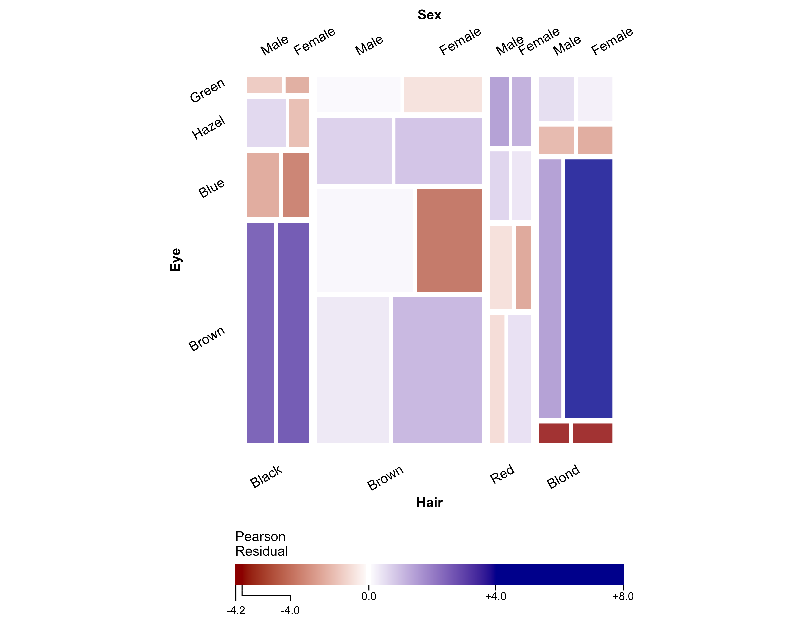
Other fixes/changes
- Fixed namespace-only usage (issue #82
from
haleyjeppson/ggmosaic) - Allow
theme_mosaic()to take additionalggplot2::theme()arguments through... - Allow for variables created within
geom_mosaic()aesthetics (issue #59 fromhaleyjeppson/ggmosaic)- This change also fixed item (re)ordering (issue #77
from
haleyjeppson/ggmosaic)
- This change also fixed item (re)ordering (issue #77
from
- Fixed fill aesthetic automatically appearing in labels (issue #39
from
haleyjeppson/ggmosaic)